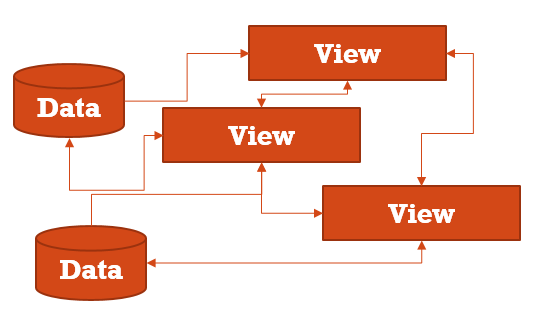
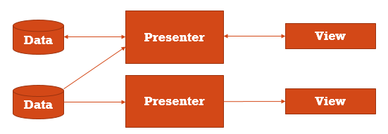

The Model-View-Presenter pattern
- Model is a data access layer such as a database API or a remote server API.
- View is a layer that displays data and reacts to user actions. On Android, this could be an Activity or an android.view.View.
- Presenter is a layer that provides View with data from the Model. Presenter is doing job related to background tasks and data changes.

More on MVP you can find at Wikipedia: Model-View-Presenter
Inspiration
Advocating Against Android Fragments
Problem
- Android development is View-centric
- View cannot be considered as a point of stability for an application because of its nonpermanent nature
- Most of the modern Android applications just use View-Model architecture
- Programmers are involved into fight with View complexities instead of solving business tasks
Using only Model-View in your application, you usually end up with "everything is connected with everything".

If this diagram does not look complex, then think about each arrow shows asynchronous data transfer. Each View can disappear and appear at random time. Do not forget about saving/restoring of Views. Attach a couple of background threads to that nonpermanent Views, and the cake is ready!
An alternative to the "everything is connected with everything" is a God object.

A God object is overcomplicated; its parts cannot be reused, tested or easily refactored.
Solution: MVC

- Complex tasks are split into simpler tasks and are easier to solve
- Less code, less bugs, easier to debug
- Testable
With Nucleus You can use an Activity or a custom Layout to be your View in MVP. You can extend the Fragment class but I would advise you against doing that.
Simplicity
During the development of the Nucleus the primary goal was to create an MVP solution
for Android with "Keep It Stupid Simple" in mind.
There are about 15Kb of nucleus.jar that do all the job.
If you are familiar with the Mortar library you will find a lot of common. However, Nucleus requires you to write less code. You can use the Dagger for your dependencies, but it is not used for instantiating a Presenter.
One of the shining features of the Nucleus is its Model part of the MVP. Other MVP solutions are, in fact, 'View-Presenter', and leave Presenter without support from the backside.
Hello world
public class MainActivity extends NucleusActivity<MainPresenter> {
@Override
protected PresenterCreator<MainPresenter> getPresenterCreator() {
return new PresenterCreator<MainPresenter>() {
@Override
public MainPresenter createPresenter() {
return new MainPresenter();
}
};
}
}
public class MainPresenter extends Presenter<MainActivity> {
@Override
protected void onTakeView(MainActivity view) {
view.setTitle("Hello, MVP world!");
}
}
If you care about your existing Activity class tree - you don't have to use the NucleusActivity class. You can just copy-paste NucleusActivity's code.
Loader
Loader is a simple class that provides a Presenter with data when the data is available. It implements the Observer and the Adapter patterns at the same time. It adopts different ways of getting data (database API, network API, cache API etc.) to fit Nucleus and Android components' lifecycle.
public abstract class Loader<ResultType> {
public interface Receiver<ResultType> {
void onLoadComplete(Loader<ResultType> loader, ResultType data);
}
public void register(Receiver<ResultType> receiver);
public void unregister(Receiver<ResultType> receiver);
protected void notifyReceivers(ResultType data);
}
A typical Nucleus application subclasses at least one Loader. Subclassing the Loader allows to avoid a boilerplate code in the future. Example: RetrofitLoader.
Complexity
A complex task requires a complex solution... or not?
Most of the time you just need to pass some data from a Model to a View, making a couple of checks and preparations for the View to make it completely Model-independent.
You don't want to deal with registering/unregistering to loaders, you don't want to check if a view exists or it is being recreated right now, you don't want to check if data from all required loaders is ready to be presented, etc. All of these are typical tasks. To be short: you don't want to create a boilerplate code. So here is the LoadBroker class that will do all of that for you.
- A Broker is used to connect a Presenter with a View.
- A LoadBroker is used to connect a Model with a View.
You can think of Broker as a helping class inside of a Presenter.
LoadBroker

- Loader - Passes data when available
- Presenter - Registers to loaders, publishes data when all data from loaders is available and a View is available. Re-publishes data when the View has been recreated or when new data is available from Loaders.
- View - Just shows data
How complex a Presenter's code should be?
public class MainPresenter extends Presenter<MainActivity> {
@Override
public void onCreate(Bundle savedState) {
addViewBroker(new LoaderBroker<MainActivity>(itemsLoader) {
@Override
protected void onPresent(MainActivity view, boolean complete) {
view.publishItems(this.getData(itemsLoader));
}
});
itemsLoader.request();
}
}
LoadBroker reduces a boilerplate code - it does all register/unregister job for you.

Custom presenter's typical lifecycle
Sometimes it is not enough just to publish a data.
public class MyPresenter extends Presenter<ViewType> {
@Override
protected void onCreate(Bundle savedState) {
// initialize the presenter, start background tasks
}
@Override
protected void onTakeView(ViewType view) {
// publish some data when a view is attached to the presenter.
}
// Use getView() to check availability of a view when receiving a background task result.
@Override
protected void onDestroy() {
// free resources, unregister and cancel background tasks when a user exits a view
}
}
More Features
Nested presenters - you can reuse your MVP-driven Views in different application areas, just override parent presenter's onTakePresenter instead of onTakeView to take control over the nested presenter. Alternatively, use the Presenter.addPresenterBroker.
Smart save/restore - Presenter gets its view AFTER the view has been completely restored and attached to an Activity. This allows to use View's ability to save and restore its state. It is also extremely useful when dealing with user input such as EditText.
How to use
- Clone the GitHub repository
- Run
mvn clean installto install the Nucleus to your local repository - Dependency:
<dependency>
<groupId>info.android15.nucleus</groupId>
<artifactId>nucleus</artifactId>
<version>0.1-SNAPSHOT</version>
</dependency>
Compiled
Future releases
- nucleus-loaders artifact with implementation for Retrofit+DiskCache, OrmLite and RxJava loaders
- Additional tests
- Improved example